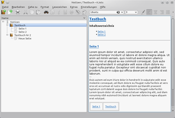

KJots
Dieser Artikel wurde für die folgenden Ubuntu-Versionen getestet:
Ubuntu 14.04 Trusty Tahr
Zum Verständnis dieses Artikels sind folgende Seiten hilfreich:
 KJots
KJots  ist die Notizbuchverwaltung von KDE und Teil der KDE-PIM-Suite Kontact. Es kann eine Vielzahl von Notizbücher erstellt werden und in allen Büchern kann jeder Seite ein eigener Name vergeben werden. Mittels Drag-and-Drop können die Bücher, sowie deren Seiten, beliebig verschoben und neu arrangiert werden. Zusätzlich werden alle Einträge automatisch gespeichert, um Datenverlust zu vermeiden.
ist die Notizbuchverwaltung von KDE und Teil der KDE-PIM-Suite Kontact. Es kann eine Vielzahl von Notizbücher erstellt werden und in allen Büchern kann jeder Seite ein eigener Name vergeben werden. Mittels Drag-and-Drop können die Bücher, sowie deren Seiten, beliebig verschoben und neu arrangiert werden. Zusätzlich werden alle Einträge automatisch gespeichert, um Datenverlust zu vermeiden.
|  |
| KJots als alleinstehendes Programm |
Installation¶
Hinweis:
KJots ist in Ubuntu 16.04 Xenial Xerus nicht in den offiziellen Ubuntuquellen verfügbar, da zum damaligen Zeitpunkt die Portierung von KJots auf KDE Framework 5 noch nicht abgeschlossen war. In nachfolgenden Ubuntu-Versionen ist KJots wieder verfügbar.
KJots kann über die Paketquellen installiert werden. Zur Installation [1] ist folgendes Paket notwendig:
kjots
 mit apturl
mit apturl
Paketliste zum Kopieren:
sudo apt-get install kjots
sudo aptitude install kjots
Nach der Installation kann KJots als alleinstehendes Programm über das Menü "Dienstprogramme → Elektronischer Notizblock (KJots)" gestartet werden.
Integration in Kontact¶
Zur Verwendung von KJots innerhalb von Kontact muss in der Regel keine extra Anpassung vorgenommen werden, es wird automatisch integriert. Am linken Rand auf der Menüleiste von Kontact sollte standardmäßig die Schaltfläche "Notizbücher" vorhanden sein. Falls diese Schaltfläche fehlt, wurde dieses Modul deaktiviert. Zur Aktivierung des Moduls wählt man im Menü auf "Einstellungen → Kontact einrichten ...". Dort muss man in der Baumansicht auf der linken Seite einen Haken vor den Punkt "Notizbücher" setzen.
Bedienung¶
Notizbuch¶
Über die Schaltfläche "Neues Notizbuch" in der Werkzeugleiste oder durch  auf eine freie Fläche in der Spalte des Bücherregals, kann ein neues Notizbuch erstellt werden. Man muss dem Buch einen Namen geben und es wird ein Notizbuch mit einer leeren Seite erstellt.
auf eine freie Fläche in der Spalte des Bücherregals, kann ein neues Notizbuch erstellt werden. Man muss dem Buch einen Namen geben und es wird ein Notizbuch mit einer leeren Seite erstellt.
Seite bzw. Notizzettel¶
Über die Schaltfläche "Neuer Notizzettel" in der Werkzeugleiste oder durch einen auf die Fläche in der Spalte des Bücherregals, kann eine neue Notizseite erstellt werden. Durch auf eine Seite, erscheint ein Menü, dort kann man über den Eintrag "Umbenennen" der Seite einen neuen Namen geben. Mittels Drag-and-Drop können Seiten an eine neue Positionen oder in ein anderes Notizbuch verschoben werden.
Den Text einer Seite kann man mit den für Textverarbeitungsprogrammen üblichen Schaltflächen aus der Werkzeugleiste formatieren. Weitere Formatierungsfunktionen stehen über den Menüpunkt "Format" zur Verfügung. Falls das Bücherregal einmal zu voll und unübersichtlich sein sollte, kann man über den Menüpunkt "Lesezeichen" zu einer gerade markierten Seiten ein Lesezeichen erstellen und diese Seite schnell über das Lesezeichenmenü erneut aufrufen.
Änderungen speichern¶
Es wird keine Schaltfläche angeboten, mit der Änderungen an den Notizbüchern gespeichert werden können. Die Notizen werden in konfigurierbaren Intervallen automatisch gespeichert. Zum Ändern der Zeitintervalle, wählt man im Menü "Einstellungen → KJots einrichten ... → Diverses". Dort kann ein beliebiger Zeitpunkt zum Speichern der Notizbücher eingestellt werden.
Export¶
Notizbücher und Seiten können über "Datei → Exportieren" oder durch im Bücherregal als Text-, HTML-Datei und KJots-Buch exportiert werden. Es werden nur markierte Bücher bzw. Seiten exportiert. Möchte man ein komplettes Buch exportieren, reicht es, wenn man dieses markiert (nicht jede Seite einzeln). Es ist auch möglich nur bestimmte, einzelne Seiten zu exportieren. Eine Mehrfachauswahl ist durch das Gedrückthalten von
Strg möglich.
Gelöschtes wiederherstellen¶
Manchmal kann es vorkommen, dass man versehentlich ein Notizbuch oder eine Seite löscht. KJots speichert automatisch Sicherheitskopien und in der Regel kann ein gelöschtes Buch bzw. eine gelöschte Seite wiederhergestellt werden. Dabei ist zu beachten, dass Sicherheitskopien 7 Tage nach dem Löschen des Originals in KJots ebenfalls entfernt werden.
KJots speichert die Notizbücher und die Sicherheitskopien im Homeverzeichnis in dem Ordner ~/.kde/share/apps/kjots. Am einfachsten ist es, wenn man bspw. mit Dolphin diesen Ordner mit dessen Suchfunktion durchsucht. Hierzu wählt man im Menü von Dolphin "Extras → Dateien suchen ..." und wechselt auf den Reiter "Inhalt". Dort gibt man in das Feld "Enthaltener Text" eine kurze Textzeile des gelöschten Buchs / der gelöschten Seite ein und  auf die Schaltfläche "Suchen". Der Name der nun angezeigten Dateien ist irrelevant, wichtiger ist das angezeigte Änderungsdatum der Dateien. Die Datei mit dem jüngsten Änderungszeitpunkt sollte die gesuchte Sicherheitskopie sein. Diese kopiert man sich in einen beliebigen Ordner und kann diese dann erneut in KJots importieren.
auf die Schaltfläche "Suchen". Der Name der nun angezeigten Dateien ist irrelevant, wichtiger ist das angezeigte Änderungsdatum der Dateien. Die Datei mit dem jüngsten Änderungszeitpunkt sollte die gesuchte Sicherheitskopie sein. Diese kopiert man sich in einen beliebigen Ordner und kann diese dann erneut in KJots importieren.

- Erstellt mit Inyoka
-
 2004 – 2017 ubuntuusers.de • Einige Rechte vorbehalten
2004 – 2017 ubuntuusers.de • Einige Rechte vorbehalten
Lizenz • Kontakt • Datenschutz • Impressum • Serverstatus -
Serverhousing gespendet von